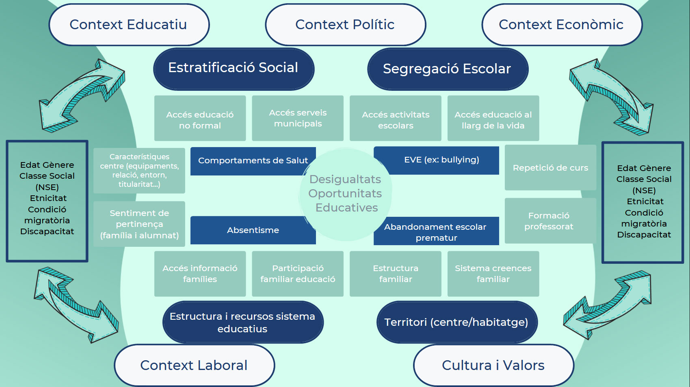

OBSERVATORI PER L’EQUITAT I LA
IGUALTAT D’OPORTUNITATS
EDUCATIVES
Sobre l’Observatori
L’Observatori pretén ser una eina per a millorar el nivell de coneixement sobre l’equitat i la igualtat d’oportunitats educatives, així com també apropar i difondre a la població de Manresa i agents d’interès les dades recollides.
Per què és important l’Observatori?
- Tenir informació constant i actualitzada del fenomen d’interès.
- Diagnosticar i prioritzar les necessitats del col·lectiu d’interès.
- Permet detectar canvis i monitoritzar tendències.
- Posa en contacte diferents agents que interaccionen/intervenen en un fenomen i permet coordinar la seva actuació.
- Formular possibles escenaris futurs/anticipar situacions.
- Donar a conèixer problemàtiques/situacions a la resta de la població.
Població interessada
- Professorat
- Centres educatius
- Consells escolars
- AFA
- Ajuntaments
- Famílies

Indicadors socioeconòmics
- Taxa d’atur
- Renta familiar disponible bruta
- Índex socioeconòmic del territori
Indicadors demogràfics
- Nacionalitat
- Nivell d’estudis assolit
- Nivell instrucció famílies
Indicadors escolars
- Nº alumnes amb necessitats educatives
- Ajuts material escolar
- Rendiment acadèmic
- Índex alumnat amb cognom estranger
- Índex demanda escolarització a I3
- Índex demanda escolarització a 1r d’ESO
- Graduació 4t d’ESO
- Distribució matrícula viva